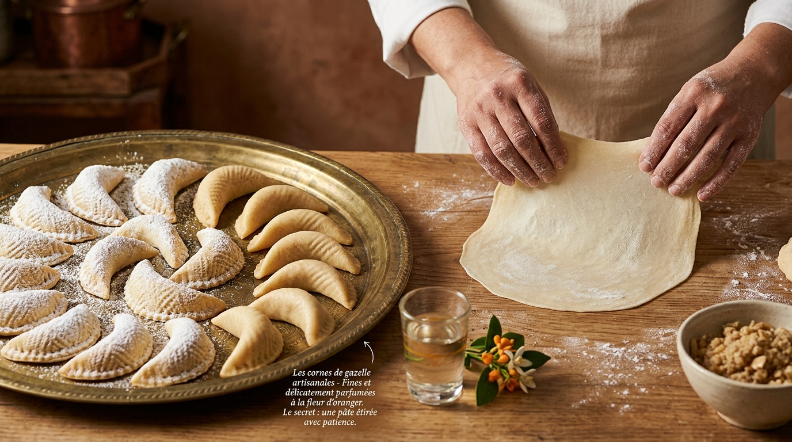

LA SIGNATURE
Corne de gazelle
Amande délicate & fleur d’oranger
MAISON DE THÉ · DOUCEURS ARTISANALES
Des recettes de famille, des parfums d’ailleurs et des instants à savourer ensemble.

LE PLAISIR DES CHOSES SIMPLESBIENVENUE CHEZ NOUS
La Tasse des Cousines est imaginée comme une parenthèse chaleureuse : on s’y retrouve autour d’un thé parfumé, d’une pâtisserie faite avec soin et de conversations qui s’éternisent.
Entre traditions familiales et inspirations venues d’ailleurs, chaque douceur raconte un petit morceau de voyage.
Découvrir notre maison →À LA CARTE
Une sélection de douceurs à déguster sur place, à offrir ou à glisser dans votre plateau gourmand.
Amande délicate & fleur d’oranger

Dattes, semoule & miel doux

Moelleux au cœur, doré dehors
UNE INVITATION AU VOYAGE
Thé à la menthe, chaï aux épices, bissap fruité… Laissez-vous guider par les parfums et les traditions.
Explorer nos boissons →VOTRE PAUSE, VOTRE STYLE
Choisissez une boisson et une douceur. Nous calculons votre petit plaisir en un clin d’œil.
Le début d’une belle pause.
La petite touche qui change tout.
NOS FORMULES DE GOÛTER
Des accords entre boissons parfumées et douceurs maison, pour prolonger la parenthèse au cœur de La Tasse des Cousines.
Supplément de 1,50 € pour un matcha latte ou un scone maison.
Une formule généreuse à partager, dans une ambiance toute simple et chaleureuse.
Réserver ce goûter →CULTURES & GOURMANDISES
Des inspirations qui traversent les frontières et se retrouvent autour de la même table.
INSPIRATION MAROCAINE
Fleur d’oranger, miel, dattes et gestes transmis : une gourmandise qui a le goût des souvenirs.
INSPIRATION INDIENNE
Cardamome, cannelle et gingembre s’unissent dans un chaï généreux et réconfortant.
INSPIRATION OUEST-AFRICAINE
Une infusion d’hibiscus colorée, acidulée et parfumée, à savourer fraîche ou chaude.
LE PETIT CARNET DE LA MAISON
Une recette, un astuce, une histoire de famille… Retrouvez les petits détails qui donnent à nos douceurs leur supplément d’âme.
Entrer dans notre carnet →
ON GARDE UNE PLACE POUR VOUS
Une envie de douceur ou un moment à partager ? Écrivez-nous pour préparer votre visite.
Nous contacter →Un accueil chaleureux
Pour les petits et les grands.
Des recettes inspirées
Entre héritage et découvertes.
Le plaisir de partager
Tout simplement.